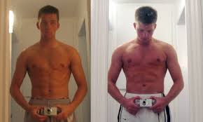

Gym for beginners
Ever wondered how people make their 1-year transformation?
It is no coincedence that people gain muscles after going to the gym.
But what do you do at the gym to maximize your gains at the Gym?
Here are 3 fundamental every gym begginers should know.
1.Consistency
If you have blackheads under your eyes from rigorous work weeks, would you rather sleep everyday at a consistent time to fulfill your sleep needs or sleep 2 entire days and then work for next week?
I bet you nobody chose that 2nd option. Then what makes us think lifting weights is any diffrent?
If we show up to train everyday at the gym, there is a 101% chance you will gain muscle in the next 30 days. No buts or ifs. Being consistent is the very first step to achieve any goal and gym is the same.
2.Nutrition
Your body NEEDS fuel in order to function.
When you put more strain on your body and eat as if you just came from the movies or a vacation, what would you expect?
That your body will recover slower than usual. But for maximizing your gains you NEED to increase your nutrition intake.
You need eating more protein(i.e, eggs,chicken,curd etc.) in order to have optimal muscle recovery.
.jpg)
3.Progressive Overload
You would have heard many people say that more weights = more muscle. But this is wrong.
For a beginner, who have never touche a weight in his life, benching 50kg right off the bat will surely tear either his pectorial muscle or his bicep.
Bottom line is, start off easy. Most guys can easily start with 5-7kg weights if they're in their late-teens and for a girl in late-teens, 2.5kg weight should be easy for her.
Keep on using this weight for your workout for 1 week.
Then, increase by an amount you can handle. That's generally 1lbs for beginner. As your muscles increase your intensity threshold should increase as well.
This is known as Progressive Overload, and it will help you in the coming years.